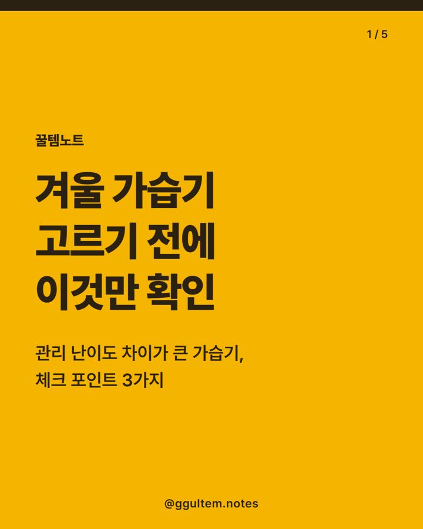

가습기 고르는 법 3가지 — 초음파 가습기 체크포인트와 세이닉 4L
2026.11.08 작성 · 2026.11.10 수정 · 꿀템노트
가습기는 물통 입구 크기, 용량과 크기, 소음 표기 세 가지를 먼저 확인하면 후보를 빠르게 좁힐 수 있어요.

이미지는 이해를 돕기 위한 일러스트이며 실제 상품과 다를 수 있어요.
왜 요즘 가습기를 찾을까
전자신문 기사에 따르면 오늘의집은 올해 10월 중순 이후 월동 준비 관련 검색이 눈에 띄게 늘었다고 밝혔어요. 10월 16~31일 검색어를 직전 기간(10월 1~15일)과 비교했을 때 '대형 가습기' 검색량이 475% 늘었고, '미니 가습기'도 165% 늘었다고 해요.
이 수치는 오늘의집이 자체 집계해 발표한 값이라, 전체 소비자의 흐름이라고 단정할 수는 없어요. 다만 실내가 건조해지는 계절에 가습기를 찾는 사람이 늘고 있다는 참고 자료는 됩니다.
가습기 고르는 법, 무엇부터 봐야 할까?
- 물통 입구 크기: 손이 들어갈 만큼 넓으면 안쪽을 씻기 편해요. 분리해서 씻을 수 있는 부품이 몇 개인지도 같이 보세요.
- 용량과 크기: 물통 용량, 사용 가능 시간, 놓을 자리에 들어가는 크기인지 상품 페이지에서 확인하세요.
- 소음: 침실에 둘 계획이라면 상품 페이지에 소음 수치가 적혀 있는지 살펴보세요.
초음파 가습기 vs 가열식 가습기, 뭐가 다를까?
일반적으로 알려진 방식 차이를 표로 정리했어요. 세부 사양은 제품마다 다르니 상품 페이지를 확인하세요.
| 구분 | 초음파식 | 가열식 |
|---|---|---|
| 방식 | 진동으로 물을 미세한 입자로 만들어 내보내요. | 물을 가열해 증기로 내보내요. |
| 확인할 점 | 물통과 분무구를 자주 씻기 편한 구조인지, 소음 표기가 있는지 확인하세요. | 증기 배출구가 뜨거울 수 있어 아이·반려동물이 있는 집은 놓는 위치를 신경 쓰세요. |
| 함께 볼 것 | 용량, 사용 시간, 세척 부품 수 | 소비전력 표기, 용량, 세척 부품 수 |
가습기 청소는 어떻게 해야 할까?
가습기는 물이 닿는 기기라 관리가 중요해요. 제조사 설명서에 적힌 세척 방법과 주기를 따르는 것이 기본이에요. 남은 물을 오래 두지 말고 새 물로 바꿔 쓰고, 제품 설명서의 금지사항을 확인하고 물통에 가습기 살균제 같은 제품을 넣지 마세요. 구매 전에는 분리 세척이 쉬운 구조인지 보는 것이 가장 실용적이에요.
가습기 세척·관리, 한국소비자원은 뭐라고 안내할까?
한국소비자원 소비자시대 2025년 12월호(가습기 13종 품질비교)의 관리 안내를 정리했어요. 세척 주기를 정해 주는 문장은 찾지 못했어요. 주기는 구매하는 제품의 설명서를 따르세요. 직접 써 본 경험이 아니에요.
| 관리 항목 | 소비자원 안내(요약) | 고를 때 볼 점 |
|---|---|---|
| 수조 내부 | 물통의 물을 주기적으로 교체하고 잔여물이 남지 않도록 충분히 세척하라고 안내해요. | 물통 입구가 손이 닿을 만큼 넓은지 |
| 진동자(초음파식) | 흐르는 물 또는 부드러운 솔로 조심스럽게 청소하라고 안내해요. | 진동자 부위가 분리·접근하기 쉬운지 |
| 증기 토출부 | 정기적으로 먼지를 제거하라고 안내해요. | 토출부 구조와 청소 방법 표기 |
| 사용 습관 | 물 이외의 첨가물을 넣지 말고, 장시간 미사용 후에는 세척 없이 바로 쓰지 말라고 안내해요. | 설명서의 금지사항 확인 |
| 가열식 안전 | 가열식은 증기 온도가 높아 화상에 각별히 주의하라고 안내해요. | 아이·반려동물이 있는 집은 놓는 위치 고려 |
출처: 한국소비자원 소비자시대 2025년 12월호(페이지에 구체 게시일은 표시되지 않음). 이 안내는 가습기 일반에 대한 것이며 이 글 상품(세이닉 SN-0928)의 설명서와 다를 수 있어요. 제품 설명서가 우선이에요.
가습기 추천 가격 비교 — 용량당 단가는?
표의 가격은 2026.11.08 기준이며 변동 가능해요. 가격과 재고는 쿠팡 상품 페이지에서 다시 확인하세요.
| 항목 | 이 글의 상품 | 다른 유형 ①: 가열식 | 다른 유형 ②: 더 작은 용량 |
|---|---|---|---|
| 게시일 기준 가격 | 25,900원 (2026.11.08 기준, 변동 가능) | 상품 페이지에서 확인 | 상품 페이지에서 확인 |
| 용량당 단가 | 약 6,475원/L (25,900원 ÷ 4L, 물통 용량 표기 기준 단순 계산) | 용량 표기를 확인해 같은 방식으로 계산 | 용량 표기를 확인해 같은 방식으로 계산 |
| 방식 | 초음파식 | 가열식(물을 가열해 증기로 내보내는 방식) | 초음파식 중 소용량 표기 상품 |
| 상품명 표기 특징 | 간편세척, 무소음 표기, 4L | 소비전력·세척 부품 수 표기를 확인 | 용량이 작아 책상·침대 옆 같은 좁은 자리에 맞출 수 있는지 확인 |
단가는 판매가를 표기 용량으로 나눈 단순 계산이며 실제 사용 시간이나 가습량과는 달라요. 다른 유형은 이 글에 링크를 따로 두지 않았고, 비교는 상품 페이지의 표기 사항으로 하세요.
이런 분께 / 이런 분은 다른 선택
상품명과 표기 사양만 보고 정리했어요. 직접 사용한 경험이 아니며 효과를 보증하지 않아요.
- 이런 분께: 4L 용량 표기가 필요한 넓은 방에서 쓰려는 분
- 이런 분께: 간편세척, 무소음 표기를 기준으로 고르려는 분
- 다른 선택: 증기식(가열식)을 선호하는 분은 가열식을 따로 찾아보세요.
- 다른 선택: 좁은 자리에 둘 계획이면 크기와 용량이 작은 상품을 비교하세요.
- 다른 선택: 소음 수치가 꼭 필요하면 상품 페이지에서 수치 표기를 확인하세요.
참고한 출처
- 한국소비자원 소비자시대 2025년 12월호, 가습기 13종 품질비교 (게시일 미표시): https://www.kca.go.kr/webzine/board/view?menuId=MENU00307&linkId=954&div=kca_2512
함께 보면 좋은 글: 워셔블 전기요 추천 · 탄소매트 가격 비교 · 방한커튼 설치 방법 · 고르는 법 · 삼립 단팥호빵 10봉 보관·조리 확인법
소개하는 상품
세이닉 간편세척 무소음 초음파 가습기 4L (SN-0928, 화이트)
상품명에 표기된 특징은 간편세척, 무소음 표기, 4L 용량이에요. 성능을 보증하는 내용은 아니니 구매 전 상품 페이지의 상세 정보를 확인하세요.
자주 묻는 질문
가습기 고르는 법에서 가장 먼저 볼 것은?
물통 입구 크기와 분리 세척이 쉬운 구조인지부터 보세요. 그다음 용량과 크기, 소음 표기를 상품 페이지에서 확인하면 돼요.
초음파 가습기의 단점은 뭔가요?
물과 닿는 부분의 관리가 필요하다는 점이 자주 언급돼요. 물통과 분무구를 자주 씻기 쉬운지, 제조사 세척 안내가 있는지 확인하세요.
가습기 청소는 어떻게 하나요?
제조사 설명서의 세척 방법과 주기를 따르세요. 남은 물을 방치하지 말고, 물통에 가습기 살균제를 넣지 마세요.
가습기 추천 기준은 뭔가요?
놓을 장소, 용량, 소음 표기, 세척 편의성을 기준으로 비교하세요. 이 글의 제품은 상품명에 표기된 특징을 소개한 것이며 성능 보증이 아니에요.
가습기 세척은 얼마나 자주 해야 하나요?
한국소비자원 안내에서 일수를 정해 주는 문장은 찾지 못했어요. 물통의 물은 주기적으로 교체하고 잔여물이 남지 않게 세척하라고 안내하니, 정확한 주기는 제품 설명서를 따르세요.
관련 글
카테고리 모음: 겨울 난방용품 · 겨울 난방·방한용품 글 모음